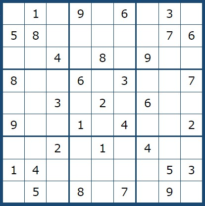
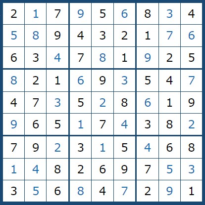
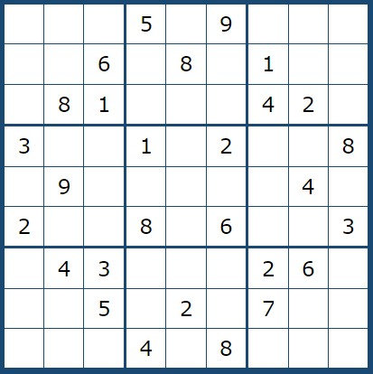
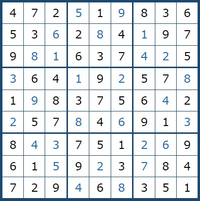
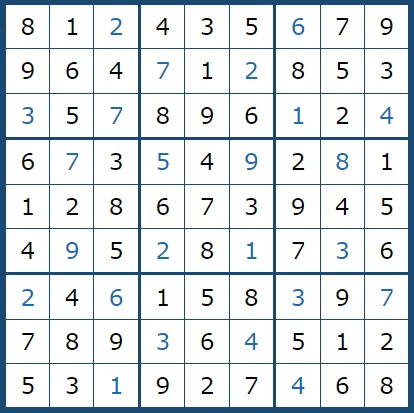

|
Sudoku Zorluk Dereceleri
Sudoku bulmacalarında çeşitli zorluk seviyeleri mevcuttur. Başlangıçta sudokunun çözülebilmesi için en az 17 rakam sudoku içine yerleştirilmiş olarak verilir.Çoğu zaman başlangıçta verilen rakam sayısı sudokunun zorluk derecesini belirlerken bazen de sudokunun çözümünde kullanılan tekniklerin zorluğu sudokunun zorluk derecesini etkiler.Aşağıda zorluk derecesine göre sudoku örnekleri çözümleriyle birlikte verilmiştir. |
KOLAY |
 |  |
ORTA |
 |  |
ZOR |
 |
 |